| |
|
YATAY GÜZERGAH: ELEMAN TİPLERİ
|
Genel Bilgiler
Yarıçapta kullanılan işaret kuralı
Sık kullanılan güzergah elemanlarıKısa çözüm ve uzun çözüm Geometrinin otomatik olarak yeniden ayarlanması İki nokta ve yarıçap ile sabit (tip 0)
Daha az kullanılan güzergah elemanlarıSerbest (tipler 8 ve -8) Döner veya 2. nokta sabit (tipler 8 ve -8) Geriye döner veya 1. nokta sabit (tipler 8 ve -8) Bağlantı veya ileriye doğru uzatma (tip 0) Ön-bağlantı veya geriye doğru uzatma (tip 4) Nokta ve azimut ile sabit (tip 5) Merkez ve yarıçap ile sabit: dairesel dönel kavşak (tip 5) Nokta, yarıçap ve azimut ile sabit (tip -5) Üç nokta ile sabit (tip 6) En sık kullanılan güzergah elemanlarının özet tablosu Birleşik ve ön-birleşik (tip 7)
Hesaplanan verileri sabite dönüştürKaydırma ile verilen klotoidli serbest/döner/geriye döner (tipler 1 ve -1) Eski serbest/döner/geriye döner (tipler 2 ve -2) Bağlantı grupları veya trenleri (tipler 3 ve 4) Eksenler arası bağlantılar Yatay güzergah tasarımında serbestlik dereceleri ve sık yapılan hatalar Genel Bilgiler Bir eksen güzergahının temel mantığı, teğet geometrik elemanların oluşturulmasına dayanır. Bunlar ana elemanlar (doğrular ve dairesel kurplar) ve genellikle bunların arasında yer alan birleşim veya geçiş eğrilerinden (normalde klotoidler) oluşur.
 İki büyük güzergah elemanı grubu vardır: İki büyük güzergah elemanı grubu vardır:
Bu bölümde, bir doğrusal yapı projesinin yatay güzergah tasarım aşamasında ortaya çıkabilecek geometrik kombinasyon yelpazesini çözmek için programın sunduğu tüm olasılıklar, sık kullanılan ve daha az kullanılan güzergah elemanları arasında ayrım yapılarak açıklanmaktadır. Yarıçapta kullanılan işaret kuralı ISTRAM®/ISPOL®, yarıçap kullanımında aşağıdaki kriterleri uygular:
Kısa çözüm ve uzun çözüm Negatif tipleri destekleyen güzergah elemanları, iki teğetlik çözümü olması durumunda, programın en kısa çözümü (tip 8) veya birinci çeyrekteki çözümü (tipler 1 ve 2) seçeceğini belirtir. Eğer özel bir durumda tamamlayıcı çözüm isteniyorsa, o zaman bu negatif tip kullanılmalıdır. Geometrinin otomatik olarak yeniden ayarlanması Plan her hesaplandığında, program teğetlik ve eksen sürekliliği çözümünü ararken her bir güzergah elemanını uygun şekilde kırpar veya uzatır, bu nedenle kullanıcının bu konuda endişelenmesine gerek yoktur. Sık kullanılan güzergah elemanları Burada, ISTRAM®/ISPOL® kullanıcıları arasında en yaygın kullanılan ve en sık karşılaşılan yatay güzergah geometrik problemlerini çözen elemanlar yer almaktadır.
İki nokta ve yarıçap ile sabit (tip 0) Bu, var olan en temel güzergah elemanıdır. İki nokta, P1 (X1,Y1) ve P2 (X2,Y2) ve ilgili işaret kuralına sahip yarıçap (R) ile tanımlanır: 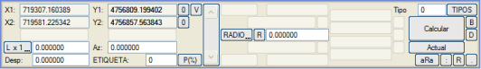
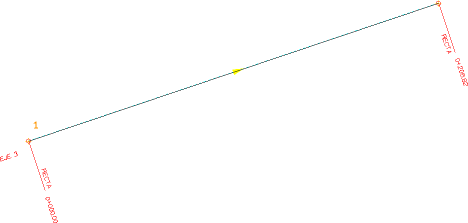 Serbest (tipler 8 ve -8) Tanımlanması için ilgili işaret kuralına sahip yarıçap (R) gereklidir: 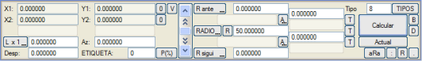
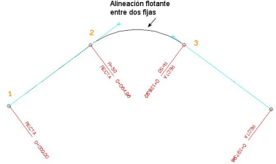 Sadece yarıçapla ve onu sabitleyen koordinatlı bir nokta olmadan tanımlandığı için, hesaplayıcı komşu güzergah elemanlarıyla uygun teğetlikleri arayacaktır, bu nedenle asla bir eksenin başında veya sonunda yer alamaz. Bu güzergah elemanı, teğetlik için uzun çözümü (negatif tip) destekler. Eğer bu tür bir elemana koordinatlar (X1,Y1) ve (X2,Y2) atanırsa, o zaman bir iki nokta ve yarıçap ile sabit gibi davranır. Döner veya 2. nokta sabit (tipler 8 ve -8) İlgili işaret kuralına sahip (R) yarıçapı ve bir geçiş noktası P2 (X2,Y2) ile tanımlanır: 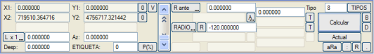
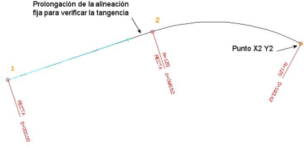 Genellikle 2. nokta sabit olarak da adlandırılır, çünkü hesaplayıcı giriş teğetini bulana kadar onu bu nokta etrafında döndürür. Bu güzergah elemanı, teğetlik için uzun çözümü (negatif tip) destekler. Eğer bu tür bir elemana koordinatlar (X1,Y1) ve (X2,Y2) atanırsa, o zaman bir iki nokta ve yarıçap ile sabit gibi davranır. Geriye döner veya 1. nokta sabit (tipler 8 ve -8) İlgili işaret kuralına sahip yarıçap (R) ve bir geçiş noktası P1 (X1,Y1) ile tanımlanır: 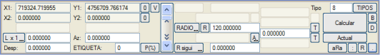
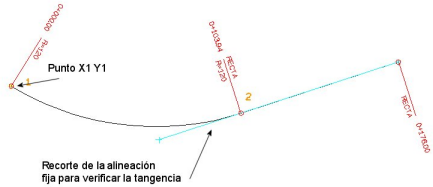 Döner elemanla benzerdir, farkı güzergah elemanının program tarafından hesaplanan teğetlikte başlamak yerine bitmesidir. Bu güzergah elemanı, teğetlik için uzun çözümü (negatif tip) destekler. Eğer bu tür bir elemana koordinatlar (X1,Y1) ve (X2,Y2) atanırsa, o zaman bir iki nokta ve yarıçap ile sabit gibi davranır. Uzunluğu Sabitle, yarıçap hesaplansın İki sabit doğru arasındaki serbest dairesel elemanlar için ve klotoidsiz ise, eğer UZUNLUK'a sıfırdan büyük bir değer verilirse, bu değer öncelikli olur ve yarıçap hesaplanır (değişken) ve değiştirilemez. Bağlantı veya ileriye doğru uzatma (tip 0) İlgili işaret kuralına sahip yarıçap (R) ve bir uzunluk (L) ile tanımlanırlar: 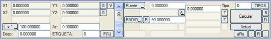
 Bir sabit elemanın veya bir bütün olarak sabit gibi davranan bir eleman grubunun (bağlantı trenleri) arkasında istenildiği kadar bağlantı elemanı olabilir. Birincisi sabitin bitiş noktasına teğettir ve sonrakiler kendilerinden öncekine teğettir. Bu elemanları hesaplayıcı tek bir taraftan, sabitin veya önceki bağlantının uzantısı olarak çözer. Bir yanal sıçrama plan ekseninde şu şekilde tanımlanabilir: bir SABİT elemanın arkasına, sabit ile aynı veya farklı yarıçaplı ve 0'dan farklı bir ötelemeye sahip, klotoidsiz tip 0 bir BAĞLANTI tanımlanır. Ön-bağlantı veya geriye doğru uzatma (tip 4) İlgili işaret kuralına sahip yarıçap (R) ve bir uzunluk (L) ile tanımlanırlar: 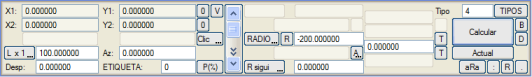
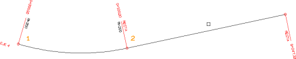 Nokta ve azimut ile sabit (tip 5) Bir P1 noktası (X1,Y1), azimut (Az) ve isteğe bağlı olarak uzunluk (L) tanımlanır:  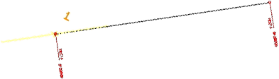 Nokta ve azimutla verilen bir doğru eleman, ayrıca uzunluğu belirtildiğinde planda tam olarak tanımlanmış olur. Eğer bu elemanın arkasında başka elemanlar varsa, teğetlik çözümünü bulmak için program bu uzunluğu uygun şekilde hesaplayacağından, bu uzunluğu belirtmek gerekmez. Merkez ve yarıçap ile sabit: dairesel dönel kavşak (tip 5) Dairenin merkezi P1 (X1,Y1), ilgili işaret kuralına sahip yarıçap (R) ve uzunluk (L) tanımlanır. Azimut (Az), dönel kavşağın başlangıç KM'sini belirtmek için kullanılır: 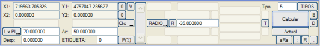
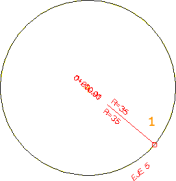 Bu durumda yarıçapın işaretine özellikle dikkat edilmelidir, çünkü KM'lerin artış yönünü belirler, öyle ki negatif bir yarıçap, dünyanın çoğu ülkesinde kullanılan araçların dolaşım yönüyle tutarlı hale getirir. Uzunluğun ise PI cinsinden girilmesi tavsiye edilir, çünkü böylece kullanıcı sadece yarıçapı iki kez belirtmek zorunda kalır.
Merkez ve yarıçap ile sabit bir elemanın sadece dönel kavşaklarda kullanılması gerekmez ve herhangi bir eksende bir eleman daha olabilir. Bu durumda, azimut ve uzunluğun kullanımı, elemanın eksendeki yerleşimine bağlıdır:
Nokta, yarıçap ve azimut ile sabit (tip -5) Merkez ve yarıçap ile sabit gibidir, ancak bu durumda P1 noktasının koordinatları, azimutun önceden belirlendiği dairesel elemanın bir geçiş noktasıdır: 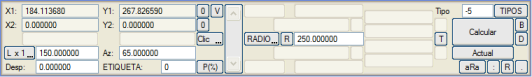
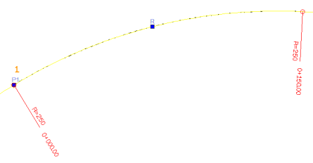 Eğer eksenin ilk elemanı ise, bu nokta eksenin başlangıç noktasıdır. Eğer eksenin son elemanı ise, bitiş noktası P1 noktasından itibaren verilen uzunluk dikkate alınarak hesaplanır, bu nokta elemanın teğetlik noktası olmasa bile. Üç nokta ile sabit (tip 6) 3 nokta ile tanımlanırlar: P1 (X1,Y1), P2 (X2,Y2) ve P3 (X3,Y3). Üç nokta artan KM'ler sırasında olmalıdır: 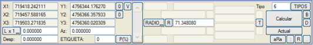
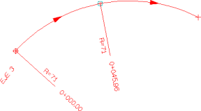 Hesaplanan yarıçap, güzergah elemanının YARIÇAP alanında bilgi amaçlı olarak görünür ve kullanıcının girdiği herhangi bir yarıçap değeri göz ardı edilir ve hesaplayıcı tarafından hemen üzerine yazılır. Veri elemanlarının çiziminde P1-P2-P3 yayları çizilir, ancak eksen sadece bu elemanla hesaplanırsa, bitiş noktası P2 olarak kalır. Gösterim: P1-P2 bölümü normal renkte vurgulanır ve P2-P3 bölümü soluk gösterilir, böylece özellikle p3'ün p1'den önce verildiği durumlarda hesaplanan eksenin bu elemanlarla karıştırılması önlenir. En sık kullanılan güzergah elemanlarının özet tablosu
Daha az kullanılan güzergah elemanları Bunlar, yukarıdakiler kadar yaygın olmayan, çünkü çok özel geometrik sorunları çözen veya çok daha çok yönlü olanlarla değiştirilmiş ve dolayısıyla kullanımdan kalkmış olan elemanlardır. Birleşik ve ön-birleşik Bu tür elemanlarda, normalde X1, Y1 ve X2, Y2 koordinatlarını içeren alanlar sırasıyla Lönce, dL ve Lsonra, dL olarak değişir. Eğer eleman bir sabitten sonra birleşik ise, sabitin uzunluğu, birleşiğin Lönce alanı sıfırdan farklıysa, değerin sabitin toplam uzunluğu olarak uygulanacak şekilde değiştirilir. Eğer dL alanı sıfırdan farklıysa, değeri sabitin doğal uzunluğunu değiştirmek için kullanılır. dL değeri negatif olabilir ve sabitin bitiş noktasını kısaltabilir. Sabit bittiğinde, eksen birleşiğin kendisiyle, uzunluğunu (L) ve yarıçapını (R) kullanarak devam eder ve varsa ara klotoidi ekler. Aşağıdaki örnek, arkasına bir birleşik eleman eklenmiş, iki nokta ile verilen bir sabit elemandan oluşmaktadır. 60 m uzunluğunda ve -100 yarıçapındaki bu eleman, daha önce önceki sabit elemanın 60 m uzatılmasına neden olur: 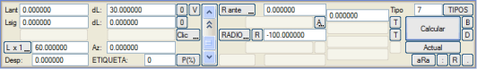
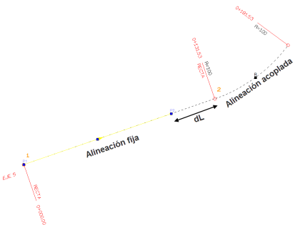 Ön-birleşik elemanlar için (veya bir sabitten önceki birleşikler), Lsonra veya dL değerleri sırasıyla X2 ve Y2 alanlarının yerini alacaktır. Bunların takip eden sabite göre işleyişi, birleşik olanlarla aynıdır.
Kaydırma ile verilen klotoidli serbest/döner/geriye döner (tipler 1 ve -1) Bu tip, birleşimi minimum mesafelere kaydırma ile yapılan serbest ve döner elemanlar oluşturmayı sağlar. 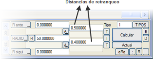Bu durumlarda, A tuşuna girilen değer klotoidin parametresi değil, kaydırma mesafesidir. P1 ve P2 için koordinat yoksa, bu bir serbest elemandır. Hesaplayıcının bunları çözmesi için, önceki ve sonraki elemanların sabit veya tek bir taraftan hesaplanabilir olması gerekir (örneğin, sabit – bağlantı – bağlantı – serbest – sabit). Eğer P2 verileri varsa, bu eleman, önceki bir sabit veya o taraftan hesaplanmış olduğunda çözülebilir. Bu bir döner elemandır ve çözüm, öncekiyle teğetlik ile belirlenir. Ondan sonra, eksen sanki sabitmiş gibi, başka bir döner, bağlantı, sabit veya hatta serbest elemanla devam edebilir. Eğer onu takip eden sabitse, birleşim serbestlik derecesine sahip değildir ve ikisi arasındaki klotoid sistem tarafından hesaplanır. Eğer P1 verileri varsa (ancak P2 yoksa), eleman geriye dönerdir, çözüm, bir sonraki elemanla teğetlik aranarak bulunur, bu nedenle bir sonraki eleman sabit veya eksenin sonundan başına doğru çözülmüş olmalıdır. Eğer önceki sabitse, sabit ile bu geriye döner arasındaki uygulanacak klotoid sistem tarafından belirlenir. Eğer bu tür bir elemana P1 ve P2'ye koordinatlar atanırsa, o zaman bir iki nokta ve yarıçap ile sabit gibi davranır. Bazı durumlarda, serbest elemanın yerleştirilmesi sorunu iki çözüme sahiptir. Bu durumda, program tarafından sunulan çözüm, negatif tip belirtilmedikçe her zaman birinci çeyreğe karşılık gelir; bu durumda diğer çözüm uygulanır. Eski serbest/döner/geriye döner (tipler 2 ve -2) Bunlar, sırasıyla 8 ve -8 tipleriyle değiştirildikleri ve serbest, döner ve geriye döner elemanlarda kullanıldıkları için kullanımdan kalkmış tiplerdir. Eğer bu tür bir elemana koordinatlar (X1,Y1) ve (X2,Y2) atanırsa, o zaman bir iki nokta ve yarıçap ile sabit gibi davranır. İşleyişi çoğu durumda benzerdir, fark, iki teğetlik çözümü olduğunda ortaya çıkar. Bu durumlarda, tip 2 birinci çeyrek çözümünü hesaplarken, tip 8 en kısa çözümü oluşturur. Eğer birinci çeyrek yerine tamamlayıcı çözüm isteniyorsa, o zaman negatif tip belirtilmelidir. Bağlantı grupları veya trenleri (tipler 3 ve 4) BASİT BAĞLANTI TRENİ Basit bağlantı treni, bir sabit elemanın (veya bir bütün olarak sabit gibi davranan birkaç elemanın) ardından gelen bir dizi bağlantı elemanıdır. TİP 3 GÜZERGAH ELEMANLARININ KULLANIMI Bu tip, bir serbest elemanda biten bir bağlantı elemanları grubuna ait ilk elemana, yani sabit elemandan çıkan elemana belirtilecektir. Bu, şöyle bir durumdur: Yani: Dolayısıyla: Eğer ilk bağlantı elemanı da tip 0 ise, grup önceki sabitin bitiş noktasına teğet olarak başlar ve 8'den önceki tüm grup, sadece başlangıçtaki sabite bağlı olarak eksenin sonuna doğru hesaplanır. Son bağlantı elemanının uzunluğu, sonraki serbest elemanın takip eden sabitle teğetliği çözmesi için uyulamaz. Eğer bağlantı grubunun ilk elemanı tip 3 olarak bildirilirse, grup, grubun tüm bağlantı elemanlarının (sonuncusu dahil) uzunluğuna uymak için kendisinden önceki sabit üzerinde "kayan" hale gelir. Sorunu çözen, uzunluğunu uyarlayan ilk sabit elemandır. Görüldüğü gibi, iki sabit arasındaki geçiş, basit bir klotoid, bir serbest eleman ve bir serbest elemanda biten bir bağlantı elemanları grubu ile yapılabilir. Bütün, o zaman şu tiplerle bildirilirdi: Sadece bağlantı grubunun ilkine tip 3 bildirilir. Varsa, sonrakiler tip 0 olmalıdır. Her zaman olduğu gibi, birleşim klotoidlerinin olup olmaması sorunu değiştirmez. TİP 4 GÜZERGAH ELEMANLARININ KULLANIMI Bu tip, bir varış grubunun ilk elemanına atanacaktır. Eğer bir sabit elemandan önce ona dayanan bir veya daha fazla bağlantı elemanı varsa, grubun ilki tip 4 ile işaretlenmelidir, varsa diğerleri tip 0 ve son olarak sorunu tamamlayan sabit. Hesaplayıcı, bu elemanı çözmeye başlayamayacağı konusunda tip 4 tarafından uyarılır, bu nedenle bunu ve varsa koordinatsız tip 0 elemanları (bağlantı elemanları) atlayarak bir sabit bulana kadar devam eder; o zaman bu sabit çözülür ve ona dayanarak, önceki bağlantı elemanları başa doğru çözülür. TİP 3 VE 4 ELEMANLARIN KOMBİNASYONLARI Aşağıdaki gibi karmaşık durumlar ortaya çıkabilir: 3'ten 8'e kadar olan sorun, ilk sabit üzerinde kayan bir bağlantı grubudur ve ilk sabit ile tip 4 arasında çözülmelidir. Ancak bu çözülmediği için, çözüm son sabite kadar tüm sorunu atlayarak ertelenmelidir. O zaman ikinci bağlantı grubu sondan başa doğru çözülmeye başlar, tip 4'ün çözümüne ulaşana kadar; 3, 0, 0,..., 8 grubu, ilk sabitin bitiş noktasını, tip 4'ün başlangıç noktasını (o zaman sabit gibi davranır) ve bu ikisinin ve serbestin uzunluğunu ayarlayarak ilk sabit ile tip 4 arasında çözülür. Hesaplanan verileri sabite dönüştür 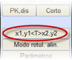İki tuştan birine basıldığında, bir sonraki eksen hesaplamasında, mevcut güzergah elemanı için (başlangıç noktası, bitiş noktası veya her ikisi için), başlangıç verileri yerine uygulama tarafından hesaplanan eleman verilerinin (tam teğetlikler) kullanılacağı belirlenir. Menüde x1,y1 veya x2,y2'ye basıldığına bağlı olarak, X1,Y1 veya X2,Y2 (büyük harflerle) görünecektir. Tekrar basıldığında devre dışı bırakılır ve x1,y1 veya x2,y2 (küçük harflerle) olarak görünür. Bir sonraki hesaplamada, hesaplanan giriş veya çıkış teğetlik noktasının koordinatları sırasıyla X1, Y1, X2 ve Y2 alanlarına aktarılacaktır. Sadece bir kez çalışır ve [Hesapla] komutu, koordinatları kopyalamanın yanı sıra bu iki komutu da devre dışı bırakır. Eğer her iki seçenek de basılırsa, hesaplamadan sonra elemanın TİPİNİ 0'a değiştirmek mümkündür, bu da serbest elemanları sabitlemeyi sağlar. Eksenler arası bağlantılar Genellikle bir projede birkaç eksen arasında bağımlılıklar bulunur (kavşaklar, kesişimler,...). ISTRAM®/ISPOL®, aslında özel bir tür sabit güzergah elemanı olan bağlantılar aracılığıyla bu bağımlılıkları bildirmeye izin verir. Yatay güzergah tasarımında serbestlik dereceleri ve sık yapılan hatalar Kullanıcı, programa girilen verilerin, güzergahın süreklilik ve teğetlik koşullarını herhangi bir belirsizlik olmaksızın garanti eden bir geometrik çözüm üretmesi gerektiğini, yani programın güzergah elemanı tiplerinin yanlış kullanımından kaçınması gerektiğini unutmamalıdır. Eksen hesaplama algoritmasının ardışık iki eleman arasındaki teğetliği çözebilmesi için, belirli serbestlik derecelerine sahip olması gerekir, böylece ikisinden birini "hareket ettirebilir". Bu, boru hattı projeleri, kanallar veya diğer özel durumlar hariç, ardışık sabit elemanlarla bir eksen planlanmaması gerektiği anlamına gelir. Örneğin, bir serbest eleman, hesaplayıcı tarafından önceki ve sonraki elemana teğet olana kadar "hareket ettirilebilir". Ardışık elemanlar arasındaki serbestlik dereceleri sorunu aşağıdaki ilkeye özetlenebilir: "Ardışık iki güzergah elemanı arasındaki teğetlik noktasında, ikisinden sadece ve sadece biri konumu sabitler (koordinatları belirler)."
Bu ilkeye dayanarak, aşağıdaki çözümler doğrudur:
Buna karşılık, yanlış çözümler (ve sık yapılan hatalar) şunlardır:
Şematik olarak, eğer X bilinen koordinatlara sahip bir noktayı ve O bilinen koordinatları olmayan bir noktayı temsil ediyorsa, aşağıdaki kombinasyonlar ortaya çıkabilir:
Yani, iki güzergah elemanı arasındaki teğetlik noktasında XO ve OX kombinasyonları geçerlidir, ancak sırasıyla veri eksikliği veya fazlalığı nedeniyle OO veya XX geçerli değildir.
|
|||||||||||||||||||||||||||||||||||||||||||||||||||||||||||||